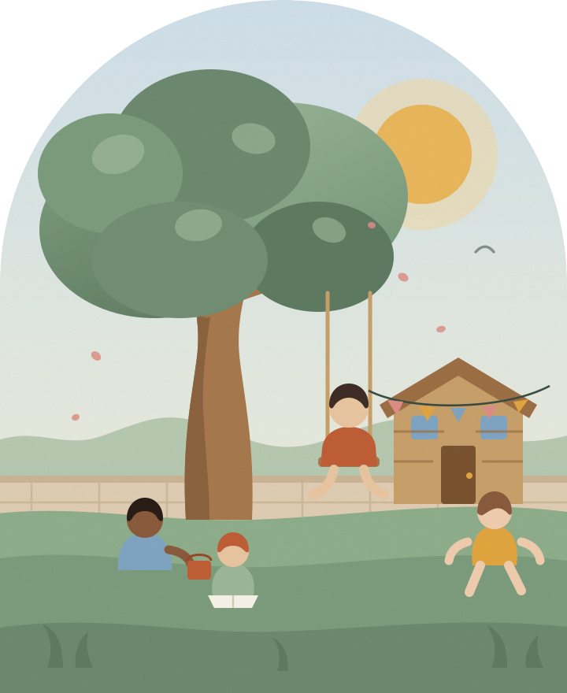

What we learned from the hole
Four children dug the same hole for eleven weeks. Nobody set it as a project. Here is what came out of it, besides about a ton of clay.
Alder Park · Since 2009
Fernhollow is a kindergarten and after-school on Wexford Lane. Two rooms, one big garden, forty-one children, and a belief in a bright future.

Chapter one
Published because parents kept asking, and because a school that can’t say what happens at 10:45 probably doesn’t know.
Right now
—
7:30
Doors open
Blankets, books, and the quiet end of the room. Nobody is greeted loudly.
8:15
Breakfast
Porridge, fruit, and whatever came out of the oven. Children serve themselves.
9:00
Morning circle
Register, weather, and who has news. Eight minutes, rarely nine.
9:30
Investigations
The long block. Clay, water, building, letters, stories — ninety minutes, uncut.
10:45
Outside
Every single day. We own the coats, so weather is not a reason.
12:15
Lunch
One long table, served family style. Ana cooks it that morning.
12:45
Rest
Sleep if you need it. Stories and a dim room if you don’t.
2:30
Snack, then the garden
Beds watered, hens fed, apples eaten straight off the tree in September.
3:15
Hollow Club opens
We collect from Marlow Elementary, Beckett Road and St. Aldate’s on foot.
4:00
Clubs
Woodwork, choir, chess, allotment. Chosen by the children each term.
5:00
Quiet hour
Homework under the long lamp, then Hollis reads aloud — badly, on purpose.
6:00
Doors close
Boots on, bags checked, one thing always left behind.
Chapter two
move up when they’re ready, not in September. Most spend a term drifting between two rooms before anyone makes it official.
01
Ages 2½ – 3
Twelve , three adults, and a room that never really gets loud. Most of the day happens on the floor. We are relaxed about diapers and unrelaxed about the nap.

02
Ages 3 – 5 · Kindergarten
Kindergarten proper. Long mornings, real tools, and the year the questions get big. leave us reading, mostly — but they leave us persistent, which we care about more.

03
Ages 5 – 11 · After school
After school and all summer. We collect you on foot, feed you properly, sit with the homework, and then let you be bored for a while — which is when the good things get built.

Education is about inspiring someone's mind, then helping the children find their strengths and finally to prepare them for their journey in life.
Nothing worth making gets made in twenty minutes. The morning block runs ninety, and we do not cut into it for anything short of a fire drill.
There is no version of the day where the garden is cancelled. We keep forty sets of waterproofs in the hall so the weather is never the deciding vote.
Knives in the kitchen, saws at the bench, matches at the fire circle. Taught properly, supervised closely, and never pretended away.
No whistles, no countdowns, no singing at children to make them tidy up. If a room is loud, we look at the grown-ups in it first.
Roughly forty minutes a day are unplanned on purpose. It is reliably the part parents ask about and reliably where the best work starts.
If your child had a bad day, bit someone, or spent four hours moving gravel from one bucket to another, that is what the note will say.
Chapter three
Average tenure is seven years. In this sector that is either remarkable or suspicious, and we think it is the first one.
Marguerite Oyelaran
Head of School
Started Fernhollow in 2009 after eleven years in Reggio-influenced classrooms. Keeps bees on the back wall.
Tomás Brandt
Grove Lead
Our co-founder who shares our vision and passion. He is the person in charge for the Grove.
Priya Raghunathan
Nest Lead
Fifteen years with under-threes. Believes in floors rather than chairs, and has never once raised her voice.
Hollis Reyes
Hollow Club Director
Former children’s librarian. Runs the 5pm read-aloud and loves teaching kids skills that will serve them for a lifetime.
Ana Hurtado
Kitchen
Cooks everything from scratch for forty-one people. She puts her heart into every dish she makes.
From the journal
Four children dug the same hole for eleven weeks. Nobody set it as a project. Here is what came out of it, besides about a ton of clay.
Why forty unplanned minutes sit in the middle of our timetable, and what usually happens in minute thirty-two.
Ana on why the Wednesday loaf is the most important lesson of the week, and why the recipe is deliberately boring.
What parents say
We toured six places that spring. Fernhollow was the only one where nobody had tidied up for us.
Our son came home with a splinter and a birdhouse, and could not have been prouder of either one.
The end-of-day note is three lines and tells you exactly what happened. After our last daycare, that alone was worth the move.
Come and look
You come at 10 o’clock on a Tuesday, when it is noisy and someone is crying about a hat. Marguerite walks you round for forty minutes and answers everything. There is no presentation and there is no folder.
Waitlist — Fall 2026
Updated 14 July 2026. We keep this honest and we do not hold places back for anybody.